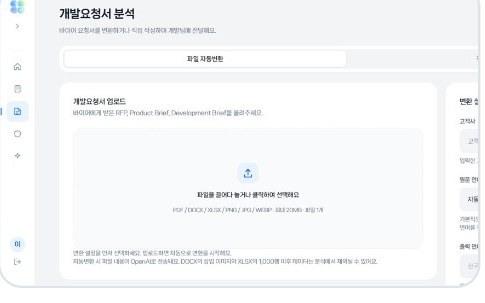
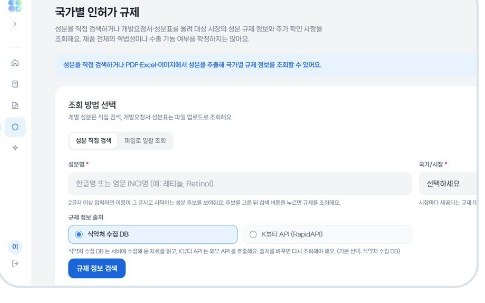
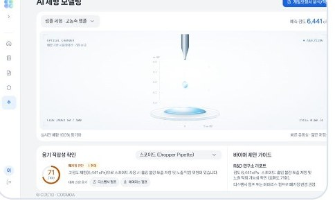
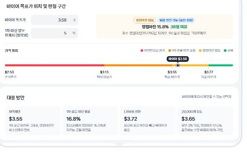

COSMOA (코스모아)
화장품 ODM 해외영업 담당자를 위한 통합 업무 대시보드
사이트 열기로그인이 필요한 사이트입니다. 처음 열 때 1분 정도 걸릴 수 있습니다.

- 프로젝트
- 한국무역협회 무역아카데미 무역 AX마스터 과정 1차 팀 프로젝트
- 기간
- 2026.09.17 ~ 09.28 (12일), 09.29 최종 발표
- 팀 구성
- 5명
- 맡은 역할
- 홈 화면, 로그인, AI 챗봇 단독 개발, 발표 자료와 시연 영상 제작
- 사용 기술
- Python(Flask), SQLite, 공공데이터 API, OpenAI API, Render 배포
- 결과
- 6개 팀 중 1위, 화장품 기업 1곳에서 실무 활용 긍정 검토
문제 정의
ODM 기업의 해외영업 담당자는 바이어, 연구소, 공장 사이를 조율하지만, 업무에 필요한 정보는 여러 사이트와 엑셀 파일에 나뉘어 있었습니다. 기능을 추측으로 정하지 않기 위해 화장품 업계에서 15년 이상 OEM·ODM 해외영업을 담당해 온 현직자와 커피챗을 진행해 하루 업무와 불편 사항을 직접 파악했습니다.
“중동 이슈로 플라스틱 원료가 귀해지면서 용기값이 크게 올랐어요. 몇 달 전에 확정한 단가로 생산하려니 마진이 거의 남지 않았죠. 그래서 견적을 낼 때 환율도 지금보다 낮춰 잡아요.”
커피챗에서 가장 인상 깊었던 이야기
| 현장의 불편 | 해결 기능 |
|---|---|
| 국가별 성분 규제가 다르고, 특히 미국과 중국은 기준이 까다롭고 자주 바뀝니다 | 국가별 인허가 규제 |
| 영문 바이어 요청서를 연구소용 한글 양식으로 매번 다시 정리합니다 | 개발요청서 자동 정리 |
| 내용물과 용기가 맞지 않으면 누액이 생겨 용기를 다시 개발해야 합니다 | AI 제형 모델링 |
| 환율과 원가 변동으로 마진이 흔들리고, 가격 역제안마다 결재를 기다립니다 | 원가·마진 시뮬레이션 |
| 환율, 수출 실적, 뉴스, 규제 공지를 아침마다 여러 사이트에서 따로 확인합니다 | 홈 화면·로그인 (직접 개발) |
서비스 구성 (팀 전체)
담당자의 하루 업무 순서대로 화면을 배치했습니다.
- 출근 직후
홈 화면
환율, 뉴스, 규제를 한 화면에서 확인 (직접 개발)
- 요청서 접수
개발요청서
바이어 요청서를 연구소 양식으로 정리
- 연구소 전달 전
인허가 규제
성분표로 시장별 규제를 사전 검토
- 샘플 제작 전
AI 제형 모델링
점도로 용기 적합성을 예측
- 견적·협상
원가·마진 시뮬레이션
단가 계산과 역제안 수용 여부 판단




프로토타입 검증
커피챗 이후 같은 현직자에게 전화로 화면을 하나씩 설명하고 의견을 들었습니다. 구현하고 싶었던 기능보다 실무에 꼭 필요한 기능을 남기는 기준이 되었습니다.
추가
- 기준 환율 직접 입력: 견적 환율은 영업 담당자의 판단으로 정하기 때문
- 수량별 단가표: 5천 개와 10만 개의 단가가 달라 영업이 바로 알아야 하기 때문
수정
- 시험·인증 비용: 개당 단가에 포함하지 않고 별도 청구로 분리
- 요청서의 목표 가격: 연구소에는 고가·중가·저가 구간만 전달
- 규제 검색: 간단히 확인한 뒤 공식 사이트로 연결
제외
- 도착지 기준 단가 계산: FOB 조건 견적에서는 운임과 관세를 바이어가 계산하기 때문
- 요청서의 거래 조건: 연구소에 공유할 필요가 없기 때문
담당 업무: 홈 화면
담당자의 아침은 환율, 수출 실적, 업계 뉴스, 규제 공지를 각각 다른 사이트에서 찾아보는 것으로 시작합니다. 로그인하면 스크롤 없이 첫 화면에서 다섯 가지 정보를 모두 확인할 수 있도록 구성했고, 카드 배치는 담당자가 아침에 확인하는 순서를 기준으로 정했습니다.
| 영역 | 내용 | 데이터 출처 |
|---|---|---|
| 환율 | 주요 통화 기준환율과 전일 대비 등락 | 한국수출입은행 API |
| 바이어 현지 시각 | 주요 수출국 도시의 현지 시각과 근무 시간 여부 | 관세청 수출 순위, 시차 계산 |
| 화장품 수출입 | 월별 수출 요약, 상위 수출국, 품목별 수출 | 관세청 API |
| 업계 뉴스 | 화장품 전문지와 식약처 소식 | RSS, 크롤링 |
| 규제 소식 | 화장품 규제 소식을 국가별로 분류해 표시 | KOTRA API, 구글 뉴스 |
담당 업무: 세부 기능과 발표
바이어 현지 시각
수출 상위국 도시의 현지 시각을 자동으로 보여 주고, 근무 시간이면 초록색으로 표시합니다. 담당 바이어가 있는 도시를 직접 선택할 수 있으며 서머타임도 반영됩니다.
로그인
담당자마다 자신에게 필요한 화면을 갖도록 계정 기능을 구현했습니다. 현직자가 가장 중요하다고 강조한 업무 이력 관리를 담당자 단위로 쌓을 수 있는 기반이기도 합니다.
AI 챗봇
OpenAI API를 연동하되, 질문을 받으면 실제 환율·수출입·규제 데이터를 먼저 조회한 뒤 답하도록 설계해 근거 없는 답변을 줄였습니다.
발표 자료·시연 영상
5명이 각자 만든 기능을 담당자의 하루를 따라가는 흐름으로 엮어, 처음 보는 사람도 각 기능이 필요한 이유를 이해할 수 있도록 했습니다.
기술적 문제 해결
공식 출처만 사용
환율은 한국수출입은행, 수출입 실적은 관세청 데이터만 사용하고, 수출입 수치는 무역협회 K-stat과 하나씩 대조해 검증했습니다.
속도와 안정성 개선
화면을 열 때마다 외부 데이터를 불러와 느리고 오류가 잦았습니다. 수집한 데이터에서 화장품 품목만 걸러 SQLite에 저장하도록 바꿔 로딩을 앞당기고 오류를 줄였으며, 환율 API가 멈추면 예비 API로 자동 전환되게 했습니다.
수집 정책 준수
크롤링을 허용하지 않는 뉴스 사이트는 본문을 가져오지 않고 제목과 링크만 표시했습니다.
결과
6개 팀 중 1위를 차지했습니다. 프로젝트 이후 화장품 기업 1곳에서 자사 업무에 COSMOA를 활용하는 방안을 긍정적으로 검토했으며, 현재 팀원들과 실무 적용을 목표로 기능을 보완하고 있습니다.
“ERP에서는 견적을 유연하게 조정해 보기 어려운데, 영업 담당자가 직접 마진을 바꿔 가며 검토할 수 있어 실무에 도움이 되겠다.”
발표 후 현직자 피드백
“고민한 흔적이 많다. 완성되면 나도 써 볼 수 있게 해 달라.”
프로토타입 검토 후 현직자 피드백
배운 점
사용자의 하루에서 출발하기
사용자의 실제 업무 흐름을 이해해야 실효성 있는 서비스를 만들 수 있다는 것을 배웠습니다. 현직자와의 커피챗과 전화 피드백이 기능 방향을 정하는 핵심 근거가 되었습니다.
데이터의 출처가 신뢰를 만든다
흩어진 데이터를 모으고 공식 출처와 대조하는 일은 시간이 많이 들지만, 그만큼 결과물의 신뢰도를 좌우한다는 것을 경험했습니다.
향후 과제: 업무 이력 관리
현직자가 가장 중요하다고 강조한 것은 언제, 어느 고객사에 무엇을 의뢰했고 어떤 피드백을 받았는지 남기는 업무 이력이었습니다. 이번에는 축적된 업무 데이터가 없어 구현하지 못했으며, 기능을 보완하며 우선 해결할 과제로 정했습니다.